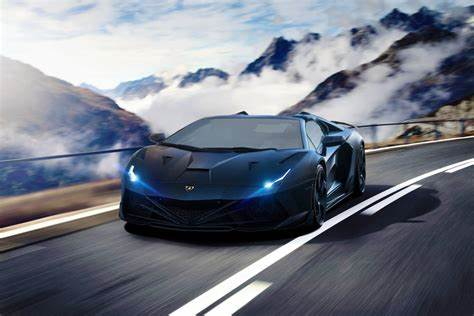

Машина (від лат. machina, від дав.-гр. μηχανή — «пристрій, засіб, знаряддя») — технічний об'єкт, який складається із взаємопов'язаних функціональних частин (деталей, вузлів, пристроїв, механізмів та ін.), що використовує енергію для виконання покладених на нього функцій. Традиційно, під машиною розуміють технічну систему, яка виконує або допомагає у виконанні якогось виду роботи. Проста машина — механізм, який перетворює напрям або величину сили без споживання енергії. Машини використовуються для виконання певних дій з метою зменшення навантаження на людину або повної заміни людини при виконанні конкретного завдання і є основою для підвищення продуктивності праці. Історично, спочатку машину класифікували як пристрій що містив рухомі частини і призначений для перетворення механічної енергії. Проте з появою і розвитком електроніки з'явились технічні об'єкти без рухомих частин, наприклад — електронна обчислювальна машина. Період часу, протягом якого машину використовують у даному виробничому процесі оцінюють в машино-годинах.
